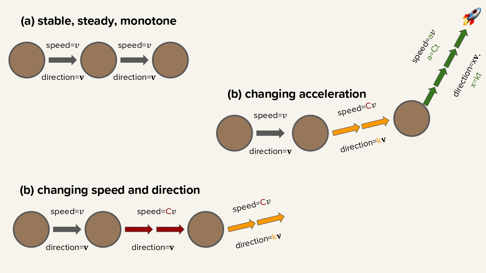

Teaching
Statement, courses, shared tasks, and student supervision
Teaching Philosophy
My life shaped my teaching and supervision philosophy. We can all start from different places and different background. It is unfair and unwise to judge people solely on the knowledge - merely, facts - that they obtain in a moment. We live in a highly changing world. Many facts, knowledge, skills are becoming outadets not during 50 years, some over 10-5 years, or even withing 1-2 years. People who only "know" do not overcome some changes. My main teaching outcome for students is to learn how to learn.

Let's drive the explanation from physics. Some particle (a) move with stable speed with stable direction (uniform motion, a=0).
But will it be able to adapt to new goals, new world?
Another one (b) is not only constantly moving, but also constantly increases the speed and even changes direction! (accelerated motion, a=C)
That one is already ready to be more flexible in this developing world.
But the final one is doing something even more crazier: it is able to change how much it changes it speed! (non-linear accelerated motion, a=Ct)
This is the effect I would like to achieve working with students - to improve their ability to learn.
Be non-static, always move, improve your movement.
Then, you can achieve anything and move anywhere you would want in this world.
Courses
I have taught several types of courses ── big lecture courses as well as several practical courses and seminars.Responsible AI and Languages Technologies — TU Munich — Seminar
Semesters covered: upcoming SS2026.
Role: main organizer.
Audience size: 20 people.
Short description: Seminar series where we will cover various topics on Responsible AI and NLP from many sizes: eithcs, fair data collection,
technical papers on AI for Social Good topics, and philosophical discussions about designing technology and AI for people.
Projects in Natural Language Processing — TU Munich — Practical Course, Bachelor and Masters
Semesters covered: every semester since 2022
Role: main organizer since WS2025, teaching assistant.
Audience size: 50 people.
Short description: Students in groups of three perform practical projects on a subpart of a real research project or participate
in shared tasks. We have successfu examples ([example1], [example2])
when pratical courses projects resulted in top conferences workshops.
Advanced NLP — TU Munich — Lecture Course
Semesters covered: 2022-2024.
Role: lecturer, teaching assistant.
Audience size: ±200 people.
Short description: lecture course of advanced topics of NLP.
Introduction NLP — TU Munich — Lecture Course
Semesters covered: 2022-2024.
Role: lecturer, teaching assistant.
Audience size: ±200 people.
Short description: introductory topics of NLP.
Shared Tasks
I led and was part of organising team of several multilingual shared tasks:TextDetox CLEF2025
Shared Task page: [link]
Task: transferring style of texts from toxic to non-toxic.
Languages covered: 15.
Participants amount: 30.
LLMs with Limited Resources @ WMT2025
Shared Task page: [link]
Task: multi-task smaller LLMs tuning for a language.
Languages covered: 2.
Participants amount: 5.
SemEval2025: BRIGHTER
Shared Task page: [link]
Task: detection basic emotions in texts.
Languages covered: 28.
Participants amount: over 150.
TextDetox CLEF2024
Shared Task page: [link]
Task: transferring style of texts from toxic to non-toxic.
Languages covered: 9.
Participants amount: 30.
Student Supervision
Since the start of my PhD, I have already supervised several dozens of students from around the same amount of countries. I worked with students from all levels - Bachelor, Masters, and PhD. All of them ended up with extremely successful career: PhD positions, lead developers in companies, or start-up founders.